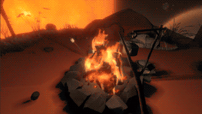

Exploration
The Campfire

The campfire is one of the most recognizable parts of Outer Wilds. It gives the player a quiet place to stop before exploring space again.
Color and Image Choices
I chose dark blue and orange because they are complementary colors. The dark blue reminds me of space, while the orange reminds me of the sun and the campfires in the game. I selected the campfire image because it shows the quieter side of the game without giving away any important story details.